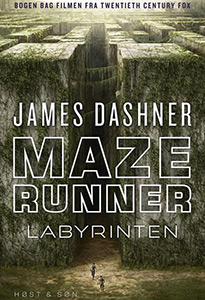
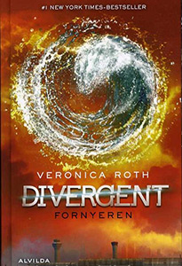
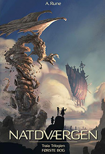
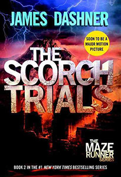

Maze Runnerlabyrinten af James Dashner I ”Maze Runner – Labyrinten” befinder vi os i den største, mest mystiske og ikke mindst mærkværdige labyrint, Lysningen. Intet er, som det skal være og ingen kan vide sig sikre Hver måned kommer et nyt medlem til labyrinten. Ingen ved hvor de kommer fra og hvordan, de er endt i labyrinten. Ingen ved hvad deres mål er og ingen ved, hvordan de kommer ud af labyrinten – kun at det er deres eneste vej ud. Det eneste som de alle sammen hurtigt finder ud af, er, at de skal skynde sig tilbage fra labyrinten, inden porten lukker i. For når først porten er lukket i “Maze Runner – Labyrinten”, så er der ingen vej tilbage |
 |
DivergentFornyeren af Veronica Roth Endelig er vi nået til den tredje bog i Divergent-trilogien, skrevet af Veronica Roth. “Divergent 3: Fornyeren” foregår i en verden af faktioner, hvor mennesket skal vælge hvor det hører til og hvem det er, og leve med det valg for evigt Efter store udfordringer finder Tris, og hendes partner gennem tykt og tyndt, Four ud af, at hele deres virkeligheden er baseret på intet andet end løgn, og nu skal de finde ud af at håndtere dette “Divergent 3: Fornyeren” er spændende og som Science Fiction-roman fungerer den både tankevækkende og interessant. Med andre ord er den ekstremt anbefalelsesværdig |
 |
Natdværgenaf A. Rune Original fantasy for unge og voksne Et sted i Kejserpaladsets gange lurer en fjende, som hverken frygter guder eller mennesker. Med sin forbudte viden vil han skabe en hær af hybrider, der er mægtig nok til at gøre ham til den ypperste i hele Traia. Meget mod deres vilje bliver tre gode venner hvirvlet ind i komplottet, og de står pludselig over for en fjende, der er dem langt overlegen. I kampen for at finde frem til deres modstander i tide slår de tre venner sig sammen med kvinden Eliya, der ved hjælp af snilde og højt udviklet udstyr er i stand til at bryde de koder, som de ikke selv formår at knække. Men opgaven viser sig ikke at være helt ufarlig. Hvilke svar kan den smukke og viljestærke Eliya hjælpe dem med at finde? Og har de tre venner den fornødne styrke til at nå deres mål og stoppe den mægtige fjende Natdværgen er første bind i Traia Trilogien, som er en magisk fortælling om venskab, mod og kærlighed. Lad dig rive med af et univers, der rummer underjordiske byer, mytiske skabninger, avancerede våben og flyvende slagskibe. En verden, hvor mennesker tør tage kampen op mod guderne |
 |
The Scorch Trialsaf James Dashner "The Scorch Trials" er 2. bog i serien om "The Maze Runner", og den byder på højspændt og underholdende science fiction Thomas har ovrelevet den frygtindgydende labyrint, og er sammen med 19 andre drenge indsluttet i et eksperiment, der skal undersøge deres reaktioner og samle data, der kan være vigtig i forhold til menneskets overlevelse.Bogen er skrevet af James Dashner og er en del af den succesfulde serie, der har fulgt i hælene på The Hunger Games og Divergent The Scorch Trials" er til alle Science Fiction-fans der kan lide en god historie |
 |